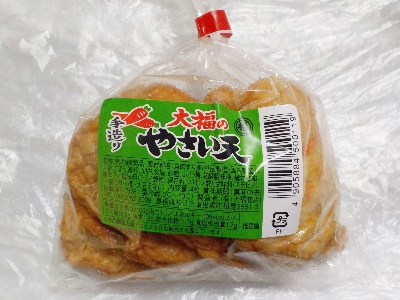
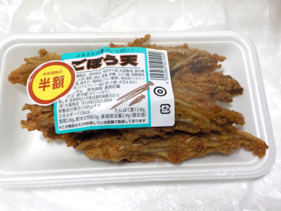
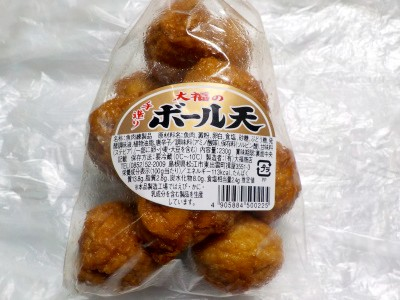

大福商店の手造りやさい天。
2025/03/22

手造りのせいなのか、いろんな形の天ぷらが入っていました。天ぷらが柔らかかったので、成形するのか難しかったのかなと勝手に想像しながら食べました。
柔らかいのでちょっとハンペンっぽいなと思いました。味付けがしっかりあり野菜や魚感は少なかったです。おつまみに向いてるかな。
島根県松江市東出雲町揖屋3551-3
2025/03/22

手造りのせいなのか、いろんな形の天ぷらが入っていました。天ぷらが柔らかかったので、成形するのか難しかったのかなと勝手に想像しながら食べました。
柔らかいのでちょっとハンペンっぽいなと思いました。味付けがしっかりあり野菜や魚感は少なかったです。おつまみに向いてるかな。
2024/01/10

ゴボウが沢山入ってて、ゴツゴツした感じのゴボウ天です。
天ぷらがジューシーで、旨みたっぷりで美味しかったです。
オカズにもオツマミにもなる味だと思いました。
2022/02/24

おでんに入れそうな天ぷらですが、そのまま食べました。
ボール状なので切らずに食べれていいですね。とても食べやすい。
濃い味の天ぷらで美味しかったです。普通に食べるのもいいし、お弁当のおかずにするのもいいかなと思いました。